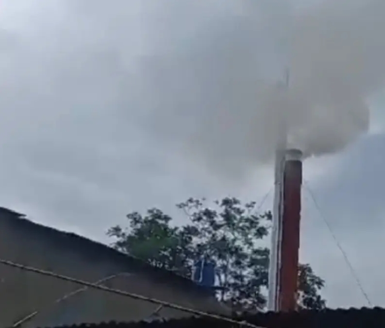

Judul Artikel: Pencemaran Udara
Nama Penulis: M Fikal Wijaya
Lokasi Pengamatan: cicurug
Tanggal Penulisan: 10-02-2026
Pencemaran udara adalah kondisi ketika udara yang kita hirup mengandung zat-zat berbahaya yang dapat membahayakan kesehatan manusia dan lingkungan. Udara yang seharusnya bersih dan segar menjadi tercemar akibat aktivitas manusia yang tidak terkendali. Pencemaran udara banyak terjadi di kota-kota besar yang memiliki tingkat kendaraan dan industri yang tinggi.
Sumber utama pencemaran udara berasal dari emisi kendaraan bermotor. Setiap hari jutaan kendaraan mengeluarkan asap yang mengandung karbon monoksida, nitrogen dioksida, dan partikel halus. Jika jumlah kendaraan terus bertambah tanpa diimbangi dengan pengendalian yang baik, kualitas udara akan semakin menurun dan berdampak buruk bagi masyarakat.
Selain kendaraan bermotor, pabrik industri juga menjadi penyumbang besar pencemaran udara. Asap hasil pembakaran bahan bakar fosil seperti batu bara dan minyak bumi menghasilkan gas beracun yang dilepaskan ke atmosfer. Jika tidak dilengkapi dengan alat penyaring yang memadai, polusi dari industri dapat menyebar luas dan mencemari wilayah sekitarnya.
Pembakaran sampah secara sembarangan juga berkontribusi terhadap pencemaran udara. Banyak masyarakat yang masih membakar sampah rumah tangga tanpa menyadari dampaknya. Asap pembakaran mengandung zat berbahaya yang dapat mengganggu sistem pernapasan, terutama pada anak-anak dan lansia.
Kebakaran hutan menjadi faktor lain yang menyebabkan pencemaran udara, terutama di beberapa wilayah Indonesia. Asap dari kebakaran hutan dapat menyebar hingga ke kota-kota dan menyebabkan kabut asap tebal. Kondisi ini sering mengganggu aktivitas masyarakat, bahkan dapat menyebabkan sekolah diliburkan dan penerbangan tertunda.
Dampak pencemaran udara terhadap kesehatan sangat serius. Paparan polusi dalam jangka panjang dapat menyebabkan penyakit seperti asma, bronkitis, infeksi paru-paru, dan gangguan jantung. Partikel halus yang terhirup dapat masuk ke dalam paru-paru dan aliran darah sehingga meningkatkan risiko penyakit kronis.
Tidak hanya berdampak pada kesehatan manusia, pencemaran udara juga mempengaruhi lingkungan. Gas rumah kaca seperti karbon dioksida berperan dalam pemanasan global dan perubahan iklim. Perubahan iklim menyebabkan suhu bumi meningkat, cuaca menjadi tidak menentu, dan meningkatkan risiko bencana alam seperti banjir dan kekeringan.
Upaya mengurangi pencemaran udara dapat dimulai dari tindakan sederhana. Masyarakat dapat menggunakan transportasi umum, bersepeda, atau berjalan kaki untuk mengurangi penggunaan kendaraan pribadi. Mengurangi pembakaran sampah dan mulai menerapkan pengelolaan sampah yang baik juga sangat penting.
Pemerintah juga memiliki peran penting dalam mengatasi pencemaran udara. Pengawasan terhadap emisi kendaraan dan industri harus dilakukan secara ketat. Selain itu, pengembangan energi terbarukan seperti tenaga surya dan angin dapat menjadi solusi untuk mengurangi ketergantungan pada bahan bakar fosil.
Kesadaran menjaga kualitas udara perlu ditanamkan sejak dini. Pendidikan lingkungan di sekolah dapat membantu generasi muda memahami pentingnya udara bersih bagi kehidupan. Dengan kerja sama antara masyarakat, pemerintah, dan dunia industri, pencemaran udara dapat dikurangi sehingga lingkungan yang sehat dan nyaman dapat terwujud untuk masa depan.